Menyaring risiko gagal bayar tanpa menolak nasabah baik
Model probabilitas gagal bayar dan kebijakan keputusan tiga zona (Approve, Review, Reject) yang memangkas expected loss lebih dari separuh, sambil tetap menyetujui 8 dari 10 pengajuan.
Inti proyek dalam lima poin
Bagian ini untuk pembaca yang hanya punya waktu dua menit. Detail teknis ada di bagian berikutnya.
- Masalahnya: dari 307.511 pemohon historis, 24.825 orang (8,07%) mengalami kesulitan membayar. Expected loss historis mencapai 6,23 M unit mata uang dataset dari total pinjaman 184,2 M.
- Solusinya: model LightGBM yang memberi setiap pemohon probabilitas gagal bayar (PD), lalu kebijakan tiga zona: Approve bila PD di bawah 12%, Review bila 12% sampai 22%, dan Reject bila 22% ke atas.
- Hasilnya: pada data uji, expected loss turun 53,7% (0,67 M dicegah) dan default rate pengajuan yang disetujui turun dari 8,07% menjadi 4,34%, sementara 79,8% pengajuan tetap disetujui. Bila diterapkan ke seluruh 307 ribu pemohon historis, kerugian yang dicegah sekitar 3,3 M.
- Batas yang dipilih dengan disiplin biaya: batas 12% adalah F2-score tertinggi yang masih memenuhi syarat bahwa total biaya (kerugian ditambah margin yang hilang) tidak boleh lebih buruk daripada tanpa model.
- Siap dipakai: aplikasi Streamlit untuk scoring per pemohon dan batch, plus dashboard Power BI untuk memantau kebijakan, segmen, dan zona.
Dua jenis kesalahan, dua harga yang berbeda
Setiap keputusan kredit bisa salah ke dua arah. Keduanya merugikan, tetapi besarnya tidak sama, dan perbedaan inilah yang menentukan cara model dinilai.
Gagal bayar lolos disetujui
Pemohon yang sebenarnya akan gagal bayar justru disetujui. Perusahaan kehilangan sebagian pokok pinjaman yang tidak kembali.
LGD (Loss Given Default) adalah porsi pinjaman yang hilang saat gagal bayar. Nilai ini tidak dipublikasikan, sehingga diuji pada 45% (batas bawah konservatif, acuan Basel foundation IRB untuk eksposur senior tanpa agunan), 60%, dan 75%.
Nasabah baik ikut ditolak
Pemohon yang sebenarnya akan membayar lancar justru ditolak. Uang tidak hilang, tetapi keuntungan bunga yang seharusnya didapat ikut hilang.
Margin bunga bersih 13,6% berasal dari pendapatan bunga bersih Rp1.261.790 juta dibagi volume pembiayaan Rp9,3 triliun (Laporan Keberlanjutan Home Credit Indonesia 2023; Kontan, 12 Februari 2024). Pinjaman dibagi dua karena saldo pokok rata-rata menurun selama cicilan berjalan.
Kesimpulannya: meloloskan satu pemohon yang gagal bayar 3,7 sampai 6,1 kali lebih mahal daripada menolak satu nasabah baik. Karena itu model harus lebih mementingkan menangkap gagal bayar, tetapi tetap tidak boleh menolak terlalu banyak nasabah baik, sebab margin yang hilang pun dihitung sebagai biaya.
Mengapa F2-score dan kurva Precision-Recall
Tujuan proyek: membangun model probabilitas gagal bayar (PD) dan mengubahnya menjadi kebijakan keputusan Approve, Review, atau Reject.
F2-score
F-score menggabungkan dua hal: recall (dari semua yang benar-benar gagal bayar, berapa persen yang tertangkap) dan precision (dari semua yang disaring model, berapa persen yang benar-benar gagal bayar).
Versi F2 memberi bobot recall 4 kali precision. Alasannya sederhana: kesalahan meloloskan gagal bayar jauh lebih mahal, jadi model yang lebih banyak menangkap gagal bayar harus mendapat nilai lebih tinggi.
PR curve dan PR-AUC
Data sangat tidak seimbang: 92 berbanding 8. Pada kondisi ini, akurasi menyesatkan, karena model yang menyetujui semua orang pun sudah 92% "akurat".
Kurva Precision-Recall fokus pada kelompok kecil yang penting, yaitu yang gagal bayar. Patokannya jelas: tebakan acak hanya mendapat PR-AUC 0,081 (sama dengan proporsi gagal bayar), sehingga setiap kenaikan di atas angka itu adalah nilai tambah nyata.
Metrik pembanding: ROC-AUC, Gini, KS, dan Brier score tetap dilaporkan agar hasil bisa dibandingkan dengan praktik umum di industri kredit dan agar kualitas probabilitas (kalibrasi) ikut terpantau.
Dari 2,7 GB CSV menjadi satu baris per pemohon
Dataset diberikan oleh program dan terdiri dari 7 tabel: application_train/test, bureau, bureau_balance, previous_application, installments_payments, POS_CASH_balance, dan credit_card_balance.
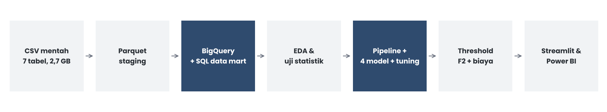
- CSV ke ParquetFile mentah disimpan ulang sebagai Parquet di staging, sekitar 8 kali lebih kecil dan lebih cepat dibaca.
- Muat ke BigQueryParquet dimuat ke BigQuery (Sandbox) sebagai gudang data.
- SQL data martRiwayat kredit diagregasi per pemohon (
SK_ID_CURR). Query diuji lebih dulu secara lokal dengan DuckDB. - Data mart v2Hasilnya 184 kolom per pemohon, siap dibaca Python.
- PythonEDA, feature engineering, pemodelan, dan evaluasi dilakukan di notebook.
Contoh fitur riwayat yang dibangun dengan SQL
Dua sinyal risiko yang paling bisa ditindaklanjuti
Setiap grafik dilengkapi panduan membaca, sehingga pembaca non-teknis pun bisa mengikuti alurnya.
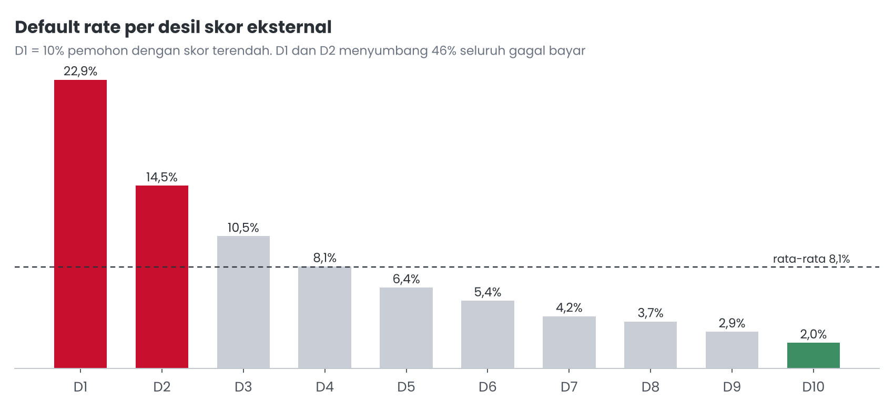
Apa yang ditampilkan
Pemohon diurutkan menurut skor dari lembaga eksternal, lalu dibagi menjadi 10 kelompok sama besar (desil). D1 adalah 10% pemohon dengan skor terendah.
Cara membaca
Tinggi batang adalah persentase pemohon di kelompok itu yang gagal bayar. Garis putus-putus adalah rata-rata seluruh pemohon, 8,1%.
Temuan
Risiko turun teratur dari 22,9% (D1) ke 2,0% (D10). 20% pemohon berskor terendah (D1 dan D2) menyumbang 46% seluruh gagal bayar. Information Value-nya tertinggi di antara semua variabel (0,61).
Aksi
Verifikasi tambahan dan uang muka untuk D1 dan D2; jalur persetujuan cepat untuk D8 sampai D10.
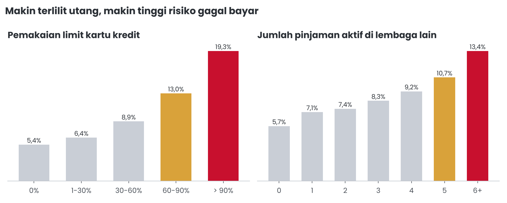
Apa yang ditampilkan
Default rate menurut dua ukuran beban utang: seberapa penuh limit kartu kredit dipakai, dan berapa banyak pinjaman aktif yang dimiliki di lembaga lain.
Cara membaca
Bandingkan batang paling kiri dan paling kanan di tiap panel. Kenaikan yang konsisten dari kiri ke kanan menunjukkan pola yang kuat, bukan kebetulan.
Temuan
Utilisasi di atas 90% berisiko 19,3% (3,6 kali pemohon dengan utilisasi 0%). Pemohon dengan 6 atau lebih pinjaman aktif berisiko 13,4% (2,4 kali yang tanpa pinjaman aktif). Pemohon yang lebih dari 15% cicilannya telat dalam 12 bulan terakhir berisiko 13,0%, dibanding 6,7% bagi yang tidak pernah telat.
Aksi
Sesuaikan limit atau tenor di zona Review, bukan langsung menolak. Pemohon ini masih bisa menjadi nasabah yang menguntungkan dengan eksposur yang lebih kecil.
Temuan lain dari EDA
- Usia di bawah 25 tahun berisiko 12,6%, sedangkan usia 60 tahun ke atas hanya 4,7%.
- Lulusan sarjana berisiko 5,4%, sedangkan lulusan SMP 11,4%.
- Wilayah dengan rating 3 berisiko 2,3 kali wilayah dengan rating 1.
- Pekerjaan low-skill laborers 16%, security staff 13%, dan drivers 12%; PNS dan pensiunan hanya 5 sampai 6%.
- Pinjaman tunai lebih berisiko daripada pinjaman revolving (8,3% berbanding 5,6%).
Membersihkan, mencegah kebocoran, lalu menambah makna
Hasil akhirnya 142 fitur model, semua diproses di dalam satu pipeline scikit-learn agar tidak ada informasi data uji yang ikut terpelajari.
Cleaning
DAYS_EMPLOYED= 365243 diubah menjadi kosong dan diberi penandaIS_NOT_EMPLOYED(pensiunan atau tidak bekerja).CODE_GENDERXNA danNAME_FAMILY_STATUSUnknown menjadi kosong;ORGANIZATION_TYPEXNA menjadi "Not employed".- Riwayat kosong diisi 0 dan diberi penanda
HAS_BUREAU,HAS_PREV,HAS_CC.
Audit kebocoran data
- Kolom yang diperbarui setelah pengajuan dibuang, misalnya
DAYS_CREDIT_UPDATEdi tabel bureau. - Kode 365243 di
previous_applicationdianggap kosong. - Data dibagi 80/20 secara stratified sebelum model mempelajari apa pun; validasi silang 3-fold.
Fitur baru
Kolom yang sengaja dibuang, beserta alasannya
| Kolom | Alasan |
|---|---|
CODE_GENDER | Keadilan (POJK 22/2023). Menambahkannya hanya menaikkan PR-AUC 0,002, sehingga tetap dikeluarkan. |
AMT_GOODS_PRICE | Redundan dengan AMT_CREDIT (VIF 115); informasinya disimpan sebagai rasio CREDIT_GOODS. |
REGION_RATING_CLIENT | Redundan (VIF 10,7). |
FLAG_MOBIL, FLAG_CONT_MOBILE | Hampir konstan, tidak membedakan pemohon. |
| Jam dan hari pengajuan | Atribut proses, bukan karakteristik pemohon. |
28 kolom bangunan versi _MODE / _MEDI | Korelasi di atas 0,99 dengan versi _AVG. |
OBS/DEF_60 | Redundan dengan versi 30 hari. |
20 kolom FLAG_DOCUMENT | Diringkas menjadi satu fitur DOC_COUNT. |
DAYS_CREDIT_UPDATE (bureau) | Kebocoran data: diperbarui setelah pengajuan. |
Pipeline scikit-learn (ColumnTransformer)
- Kolom miring: imputasi median, winsorizing p1 sampai p99, log1p, lalu StandardScaler.
- Kolom ber-outlier: RobustScaler. Kolom numerik lain: StandardScaler.
- MissingIndicator agar informasi "data kosong" tidak hilang.
- Biner: passthrough. Pendidikan: encoding ordinal.
- Kategori sampai 10 nilai: one-hot encoding.
OCCUPATION_TYPEdanORGANIZATION_TYPE: TargetEncoder cross-fitted.
Empat algoritma, satu pemenang yang tipis tetapi konsisten
Semua model dibandingkan memakai prediksi out-of-fold pada data latih, dengan PR-AUC sebagai acuan.
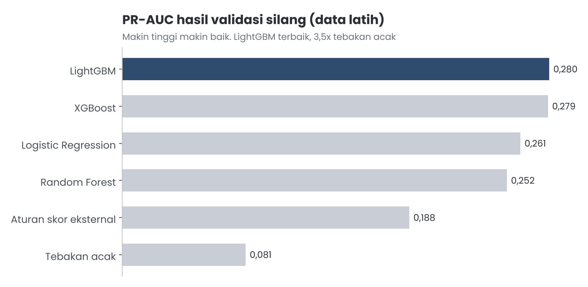
Mengapa LightGBM
LightGBM (0,280) dan XGBoost (0,279) hampir sama, dan keduanya jelas di atas Logistic Regression (0,261), Random Forest (0,252), serta aturan sederhana berbasis skor eksternal (0,188). Ensemble juga mencapai 0,280, tetapi tidak diadopsi karena tambahannya terlalu kecil dibanding kerumitannya.
Parameter LightGBM terbaik
n_estimators 1600, learning_rate 0,03, num_leaves 15, max_depth 6, min_child_samples 50, subsample 0,7, colsample_bytree 0,3, reg_alpha 5, reg_lambda 10, min_split_gain 0,1.
Eksperimen yang diuji, termasuk yang tidak dipakai
Class weight
Diuji pada semua model. PR-AUC tidak naik, sedangkan Brier score menjadi 2,5 sampai 3 kali lebih buruk. Artinya probabilitas yang dihasilkan jadi tidak realistis, padahal probabilitas itu dipakai untuk menghitung expected loss.
Tuning hyperparameter
RandomizedSearchCV dengan metrik average_precision: 15 kombinasi untuk LR, 10 untuk RF, 30 untuk LightGBM, dan 20 untuk XGBoost. Parameter preprocessing ikut di-tuning.
Seleksi fitur dan fitur tambahan
SelectFromModel yang bersarang di dalam CV: top 100 fitur menurunkan PR-AUC 0,002, top 60 menurunkan 0,006. Lima fitur tambahan hanya menaikkan 0,001, di bawah batas adopsi 0,002.
Gender tetap dikeluarkan
Menambahkan gender hanya menaikkan PR-AUC 0,002. Keuntungan sekecil itu tidak sebanding dengan risiko diskriminasi, sehingga variabel ini tetap tidak dipakai.
Performa di data uji yang belum pernah dilihat model
Data uji berisi 20% data, yaitu 61.503 pemohon. Hasilnya konsisten dengan validasi silang (PR-AUC 0,288 di data uji berbanding 0,280 saat CV).
Kalibrasi sudah dicek (notebook 04 bagian 14.1). Pada 10 kelompok pemohon, kurva kalibrasi menempel garis diagonal dan Brier score di data uji 0,0655. Artinya angka PD bisa dibaca langsung sebagai peluang gagal bayar dan aman dipakai untuk menghitung expected loss, sehingga kalibrasi ulang tidak diperlukan.
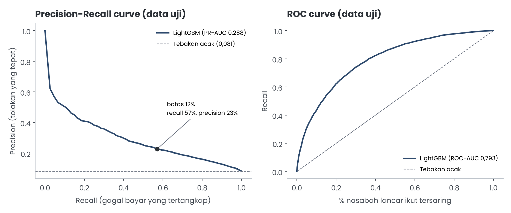
Cara membaca kurva kiri
Sumbu bawah: berapa persen gagal bayar yang tertangkap. Sumbu kiri: dari yang disaring, berapa persen yang memang gagal bayar. Makin jauh kurva merah di atas garis putus-putus (tebakan acak), makin baik.
Cara membaca kurva kanan
Sumbu bawah adalah persentase nasabah lancar yang ikut tersaring. Kurva yang melengkung tinggi ke kiri atas berarti model menangkap banyak gagal bayar sambil mengorbankan sedikit nasabah lancar.
Temuan
Pada batas 12%: F2 0,439, recall 57,1%, precision 22,8%, dan 20,2% pengajuan tersaring.
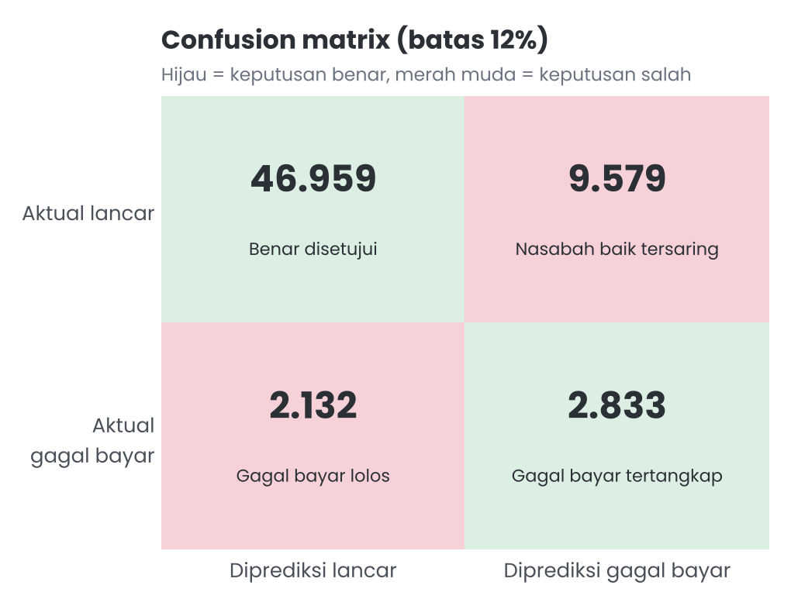
Cara membaca
Kotak kiri atas dan kanan bawah adalah keputusan yang benar. Dua kotak merah muda adalah kesalahan: kanan atas nasabah baik yang ikut tersaring, kiri bawah gagal bayar yang lolos.
Temuan
Dari 4.965 gagal bayar di data uji, 2.833 tertangkap dan 2.132 lolos. Sebanyak 9.579 nasabah baik ikut tersaring; inilah alasan sebagian besar dari mereka diarahkan ke zona Review, bukan langsung ditolak.
Per produk
Cash loans: PR-AUC 0,292, recall 58%. Revolving loans: PR-AUC 0,224, recall 41%.
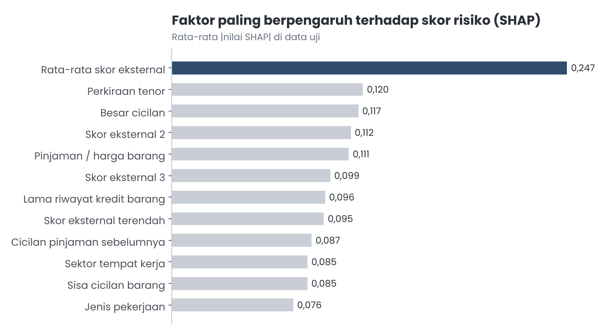
Apa itu SHAP
SHAP mengukur seberapa besar setiap fitur menggeser skor risiko seorang pemohon. Batang yang lebih panjang berarti fitur itu lebih sering dan lebih kuat mengubah keputusan.
Temuan
Rata-rata skor eksternal mendominasi (0,247), sekitar dua kali fitur berikutnya. Berikutnya adalah perkiraan tenor (0,120), besar cicilan (0,117), skor eksternal 2 (0,112), dan rasio pinjaman terhadap harga barang (0,111). Pengaruh tenor tidak linear.
Makna bisnis
Selain skor eksternal, struktur pinjaman (tenor, cicilan, pinjaman dibanding harga barang) sangat menentukan. Ini bisa diatur oleh perusahaan, sehingga zona Review dapat memakai penyesuaian limit dan tenor.
Memilih batas yang menguntungkan, bukan sekadar akurat
Semua angka di bagian ini dihitung di data uji dengan LGD 45%, dalam miliar (M) unit mata uang dataset.
Bandingkan tiga batas keputusan
Pilih batas probabilitas gagal bayar. Pemohon dengan PD di atas batas tidak disetujui otomatis.
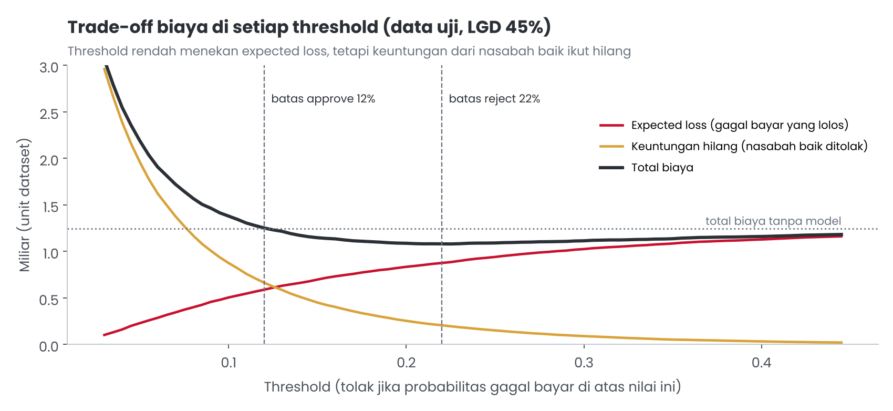
Cara membaca
Bergerak ke kiri berarti lebih ketat. Garis merah (kerugian gagal bayar) turun, tetapi garis amber (margin dari nasabah baik yang ditolak) naik tajam. Garis hitam adalah jumlah keduanya.
Temuan
Di batas 12%, total biaya tepat menyentuh garis tanpa model. Lebih ketat dari itu, total biaya justru lebih mahal. Titik terendah total biaya ada di sekitar 22%.
Keputusan
12% menjadi batas Approve (F2 tertinggi yang lolos guardrail biaya), dan 22% menjadi batas Reject. Di antaranya adalah zona Review.
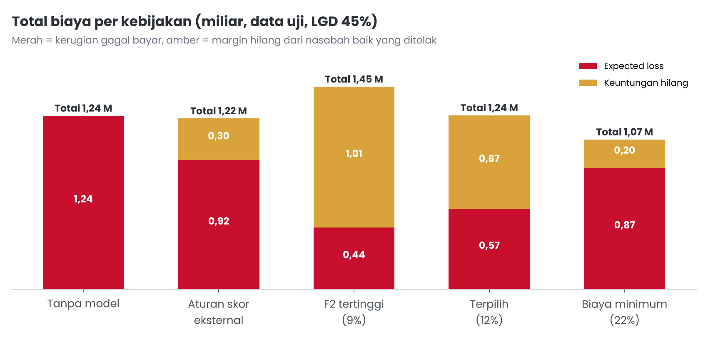
Cara membaca
Tinggi total batang adalah biaya keseluruhan. Komposisi warna menunjukkan dari mana biaya itu berasal.
Temuan
Kebijakan F2 tertinggi (9%) menolak 13.808 nasabah baik, sehingga margin yang hilang lebih besar daripada kerugian yang dicegah. Kebijakan biaya minimum (22%) paling hemat, tetapi hanya menangkap sekitar 32% gagal bayar.
Mengapa 12%
Batas 12% memindahkan biaya dari kerugian gagal bayar ke margin yang hilang tanpa menambah total biaya, sehingga portofolio yang disetujui jauh lebih sehat.
Tabel perbandingan kebijakan
| Kebijakan | Disetujui | DR disetujui | Expected loss | Keuntungan hilang | Total biaya | vs tanpa model |
|---|---|---|---|---|---|---|
| Tanpa model | 100% | 8,07% | 1,24 M | 0 | 1,24 M | - |
| Aturan skor eksternal | 90,1% | 6,34% | 0,92 M | 0,30 M | 1,22 M | hemat 1,6% |
| F2 tertinggi (9%) | 72,1% | 3,61% | 0,44 M | 1,01 M | 1,45 M | biaya naik 16,8% |
| Terpilih (12%) | 79,8% | 4,34% | 0,57 M | 0,67 M | 1,24 M | impas (-0,2%) |
| Biaya minimum (22%) | 92,0% | 5,85% | 0,87 M | 0,20 M | 1,07 M | hemat 13,7% |
Data uji 61.503 pemohon, LGD 45%. DR = default rate. M = miliar unit mata uang dataset.
Kebijakan tiga zona
Approve
- Porsi pemohon
- 79,8%
- Default rate
- 4,3%
- Porsi seluruh gagal bayar
- 42,9%
Review
- Porsi pemohon
- 12,2%
- Default rate
- 15,7%
- Porsi seluruh gagal bayar
- 23,7%
Reject
- Porsi pemohon
- 8,0%
- Default rate
- 33,6%
- Porsi seluruh gagal bayar
- 33,3%
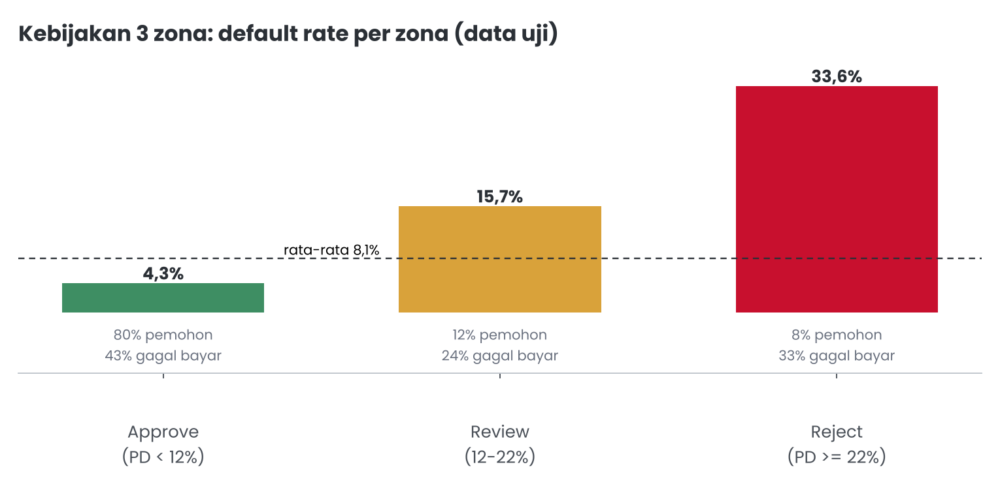
Sensitivitas terhadap asumsi LGD
Total biaya -0,2%, expected loss -53,7%.
Hemat bersih batas terpilih.
Hemat bersih batas terpilih.
LGD 45% adalah asumsi paling konservatif. Makin besar LGD yang sebenarnya, makin besar penghematan bersih dari batas 12%.
Apa yang belum bisa dijawab model ini
Disampaikan terbuka agar pengguna tahu kapan hasil model perlu disikapi dengan hati-hati.
- Batas informasi dataPR-AUC 0,288 terlihat kecil, tetapi baseline hanya 0,081. ROC-AUC 0,79 setara solusi kuat pada dataset ini (sekitar 0,80 untuk solusi publik terbaik). Penambahan fitur, seleksi fitur, ensemble, dan tuning luas hanya menggeser PR-AUC sekitar 0,002.
- Precision rendahDari 4 pemohon yang tersaring, 1 benar-benar gagal bayar. Namun kelompok ini 2,8 kali lebih berisiko dari rata-rata, karena itu sebagian besar masuk zona Review, bukan ditolak.
- Bias seleksiLabel hanya ada untuk pemohon yang dulu disetujui (tanpa reject inference), sehingga risiko profil yang dulu ditolak bisa diremehkan.
- Validasi acak, bukan out-of-timeDataset tidak punya tanggal pengajuan, sehingga ketahanan model terhadap perubahan kondisi ekonomi belum teruji.
- Revolving loans lebih lemahPR-AUC 0,224 dan recall 41%, karena jumlah datanya kecil (9%).
- Asumsi bisnisLGD dan margin adalah proksi. Nilai dampak bergantung pada asumsi ini, karena itu diuji dalam 3 skenario.
- ReproducibilityTargetEncoder memakai cross-fitting acak; replikasi di lingkungan lain memberi ROC-AUC 0,788 berbanding 0,793.
- KeadilanGender dikeluarkan, tetapi variabel proksi seperti usia, status keluarga, dan pekerjaan masih ada dan perlu audit fairness.
- Ketergantungan pada skor eksternalSkor eksternal adalah kotak hitam dari lembaga lain dan mendominasi model. Jika sumbernya berubah, performa ikut berubah.
Langkah berikutnya untuk bisnis dan untuk model
Bisa dijalankan sekarang
- Terapkan kebijakan 3 zona dengan batas 12% dan 22% sebagai filter awal, lalu tinjau batasnya setiap kuartal.
- Di zona Review, kurangi limit (misalnya 50%), perpendek tenor, atau minta uang muka. Cara ini menjaga margin sambil menekan risiko.
- Prioritaskan segmen aman: skor D8 sampai D10, PNS, dan pensiunan (melalui kerja sama payroll).
- Lakukan verifikasi tambahan untuk D1 dan D2, serta pemohon dengan utilisasi kartu kredit di atas 90% atau 6 pinjaman aktif lebih.
- Pantau default rate per zona setiap bulan.
Agar model makin tajam dan aman
- Tambah data baru: riwayat SLIK OJK yang lebih rinci, data alternatif (pembayaran tagihan, e-wallet, telco), dan pendapatan terverifikasi. Ini cara paling efektif menaikkan PR-AUC.
- Validasi out-of-time dan monitoring PSI/CSI bulanan; retraining terjadwal saat label 12 bulan tersedia.
- Reject inference atau eksperimen champion-challenger kecil untuk mendapat label dari profil yang biasanya ditolak.
- Model atau threshold terpisah per produk (cash dan revolving) dan per segmen.
- Monotonic constraints dan scorecard WOE dengan Logistic Regression sebagai challenger yang mudah diaudit regulator.
- Tuning Bayesian (Optuna) dengan early stopping dan 5-fold; coba CatBoost untuk kategori.
- Objective berbasis profit (cost-sensitive) memakai LGD dan EAD aktual internal.
- Audit fairness per kelompok usia atau proksi, serta alasan penolakan per nasabah dari SHAP (adverse action reason).
- MLOps: model registry, API scoring, dan A/B rollout bertahap.
Dari notebook ke alat yang bisa dipakai tim
Model tidak berhenti di notebook. Ada dua antarmuka: aplikasi Streamlit untuk analis kredit, dan dashboard Power BI untuk manajemen.
Scoring dan simulasi kebijakan
- Beranda: profil risiko portofolio.
- Scoring Pemohon: cari berdasarkan ID atau isi manual, lengkap dengan penjelasan SHAP per pemohon.
- Scoring Batch: unggah CSV untuk menilai banyak pemohon sekaligus.
- Performa & Kebijakan: simulator nominal untuk batas approve dan reject, LGD, serta perlakuan zona Review.
- Tentang: latar belakang dan metodologi.
Pemantauan kebijakan
- Ringkasan Kebijakan: KPI nominal, pembanding interaktif, slicer threshold, LGD, dan limit Review, kurva biaya, serta perbandingan sebelum dan sesudah.
- Segmen & Zona: default rate per segmen dan per zona.
- Profil Risiko Pemohon: karakteristik pemohon per tingkat risiko.
Sorotan warna dinamis (merah untuk default rate tertinggi, hijau untuk terendah) dan tombol navigasi antar halaman.
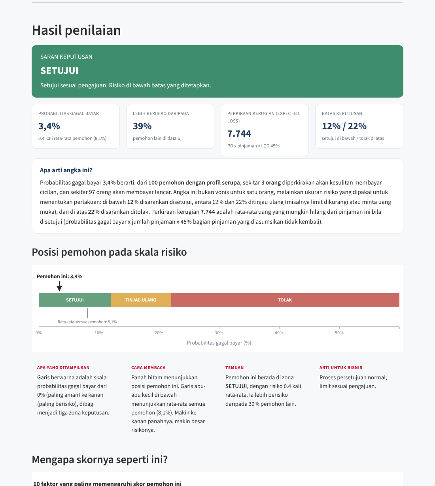
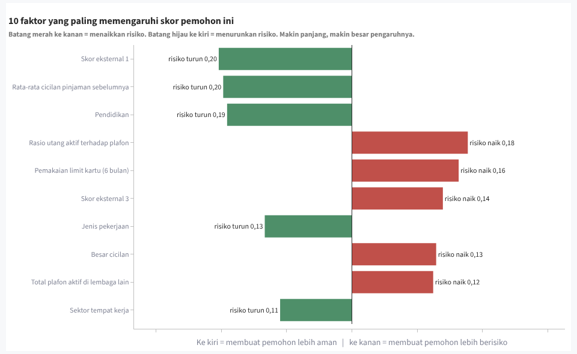
Dashboard Power BI interaktif: tiga halaman (Ringkasan Kebijakan, Segmen & Zona, Profil Pemohon) dengan slicer batas keputusan, LGD, dan limit zona Review. Buka dashboard online.
Deliverable lain
Empat notebook (01_business_understanding, 02_etl, 03_eda, 04_modeling), presentasi 10 slide, artikel Medium, dan halaman portfolio ini.